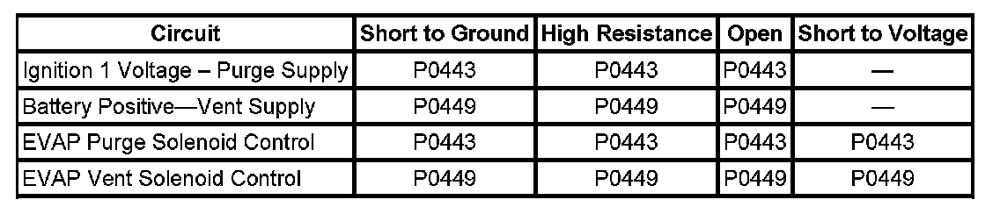

P0443
DTC P0443 or P0449
Diagnostic Instructions
- Perform the Diagnostic System Check - Vehicle prior to using this diagnostic procedure Initial Inspection and Diagnostic Overview.
Review Strategy Based Diagnosis for an overview of the diagnostic approach Initial Inspection and Diagnostic Overview.
- Diagnostic Procedure Instructions provides an overview of each diagnostic category Initial Inspection and Diagnostic Overview.
DTC Descriptors
DTC P0443: Evaporative Emission (EVAP) Purge Solenoid Control Circuit
DTC P0449: Evaporative Emission (EVAP) Vent Solenoid Control Circuit
Diagnostic Fault Information

Circuit/System Description
P0443
An ignition voltage is supplied directly to the normally closed evaporative emission (EVAP) canister purge solenoid valve. The EVAP canister purge solenoid valve is pulse width modulated (PWM). The scan tool displays the amount of ON time as a percentage. The control module monitors the status of the driver. The control module controls the EVAP canister purge solenoid valve ON time by grounding the control circuit via an internal switch called a driver.
P0449
Battery voltage is supplied to the EVAP canister vent solenoid valve. The control module grounds the EVAP canister vent solenoid valve control circuit to close the valve by means of an internal switch called a driver. The scan tool displays the commanded state of the EVAP canister vent solenoid valve as ON or OFF. The control module monitors the status of the driver.
Conditions for Running the DTC
- The ignition is ON.
- The system voltage is between 9-18 volts.
- DTCs P0443 and P0449 run continuously when the above conditions are met.
Conditions for Setting the DTC
The control module detects that the commanded state of the driver and the actual state of the control circuit do not match for a minimum of 5 seconds.
Action Taken When the DTC Sets
DTCs P0443 and P0449 are Type B DTCs.
Conditions for Clearing the MIL/DTC
DTCs P0443 and P0449 are Type B DTCs.
Reference Information
Schematic Reference
Engine Controls Schematics Electrical Diagrams
Connector End View Reference
- Engine Control Module Connector End Views Connector Views
- Engine Controls Connector End Views Connector Views
Description and Operation
Evaporative Emission Control System Description Description and Operation
Electrical Information Reference
- Circuit Testing Component Tests and General Diagnostics
- Troubleshooting with a Test Lamp Component Tests and General Diagnostics
- Testing for Intermittent Conditions and Poor Connections Component Tests and General Diagnostics
- Wiring Repairs Component Tests and General Diagnostics
DTC Type Reference
Powertrain Diagnostic Trouble Code (DTC) Type Definitions Diagnostic Trouble Code Descriptions
Scan Tool Reference
- Scan Tool Data List Scan Tool Testing and Procedures
- Scan Tool Output Controls Scan Tool Testing and Procedures
Circuit/System Verification
P0443
With the ignition ON, engine OFF, you should hear a clicking sound when the EVAP canister purge solenoid valve is commanded to 50 percent with a scan tool. The clicking sound should stop when the EVAP canister purge solenoid valve is commanded to 0 percent. The rate at which the valve cycles should increase when the commanded state is increased, and decrease when the commanded state is decreased.
P0449
1. With the ignition ON and the engine OFF, command the EVAP vent solenoid ON and OFF with a scan tool.
2. Listen for a click when the valve operates. Verify that both the ON and the OFF states are commanded.
Circuit/System Testing
P0443
1. Ignition OFF, disconnect the harness connector at the EVAP canister purge solenoid valve.
2. Ignition ON, verify that a test lamp illuminates between the voltage supply circuit terminal A and ground.
-> If the test lamp does not illuminate, test the voltage supply circuit for a short to ground or an open/high resistance. If the circuit tests normal and the voltage supply circuit fuse is open, test or replace the EVAP canister purge solenoid.
3. Connect a test lamp between the voltage supply circuit terminal A and the control circuit terminal B.
4. Command the solenoid to 50 percent with a scan tool. The test lamp should flash or illuminate when commanded to 50 percent and turn OFF when commanded to 0 percent.
-> If the test lamp is always ON, test the control circuit for a short to ground. If the circuit tests normal, replace the control module.
-> If the test lamp is always OFF, test the control circuit for a short to voltage or an open/high resistance. If the circuit tests normal, replace the control module.
5. If all circuits test normal, replace the EVAP canister purge solenoid valve.
P0449
Note: On a normally operating system, engine idling, with the vent valve open and the purge valve commanded to 100 %, the fuel tank vacuum should be less than -6 inches of water.
1. Ignition OFF, disconnect the harness connector at the EVAP canister vent solenoid valve.
2. Ignition ON, verify that a test lamp illuminates between the voltage supply circuit terminal A and ground.
-> If the test lamp does not illuminate, test the voltage supply circuit for a short to ground or an open/high resistance. If the circuit tests normal and the voltage supply circuit fuse is open, test or replace the EVAP canister vent solenoid.
3. Connect a test lamp between the voltage supply circuit terminal A and the control circuit terminal B.
4. Command the solenoid ON and OFF with a scan tool. The test lamp should turn ON and OFF when changing between states.
-> If the test lamp is always ON, test the control circuit for a short to ground. If the circuit tests normal, replace the control module.
-> If the test lamp is always OFF, test the control circuit for a short to voltage or an open/high resistance. If the circuit tests normal, replace the control module.
5. If all circuits test normal, replace the EVAP canister vent solenoid valve.
Repair Instructions
Perform the Diagnostic Repair Verification after completing the diagnostic procedure.
- Evaporative Emission Canister Vent Solenoid Valve Replacement Service and Repair
- Control Module References for ECM replacement, setup, and programming Programming and Relearning